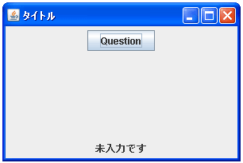

- Home ›
- Swing ›
- JOptionPaneクラス
複数の値から選択可能な入力ダイアログを表示する
今までの入力ダイアログではユーザーに文字列を入力してもらう形式でしたが、事前に設定した複数の値の中から1つ選択してもらう形での入力ダイアログを作成する方法を確認します。JOptionPaneクラスで用意されている「showInputDialog」メソッドを使います。前頁の同名のメソッドとは引数が異なります。
showInputDialog
public static Object showInputDialog(Component parentComponent,
Object message,
String title,
int messageType,
Icon icon,
Object[] selectionValues,
Object initialSelectionValue)
throws HeadlessException
初期選択、指定可能な選択項目、およびそれ以外のすべてのオプションの指定
が可能なブロッキングダイアログでユーザーに入力を求めます。選択項目は
selectionValues で指定します。 null の場合、ユーザーは任意の値を入力す
ることができます。入力の手段は通常は JTextField です。
initialSelectionValue はユーザーに示す初期値です。selectionValues をど
のように最適に提示するかは UI しだいですが、通常は JComboBox、JList、ま
たは JTextField を使用します。
パラメータ:
parentComponent - ダイアログの親 Component
message - 表示する Object
title - ダイアログのタイトルバーに表示する String
messageType - 表示されるメッセージの種類。 ERROR_MESSAGE、
INFORMATION_MESSAGE、WARNING_MESSAGE、QUESTION_MESSAGE、または
PLAIN_MESSAGE
icon - 表示する Icon イメージ
selectionValues - 選択可能な項目を示す Object の配列
initialSelectionValue - 入力フィールドを初期化する値
戻り値:
ユーザー入力。null の場合はユーザーが入力を取り消したことを意味する
例外:
HeadlessException - GraphicsEnvironment.isHeadless が true を返す場合
このメソッドを使うと表示するタイトルとメッセージタイプそしてアイコンを指定できる入力ダイアログを表示できます。またテキストボックスの代わりに配列で指定した複数の値から1つ選択できるような入力ダイアログとなります。
1番目の引数にダイアログを表示するための親フレームを指定します。例えばJFrameクラスのオブジェクトを指定して下さい。
2番目の引数にはダイアログに表示するオブジェクトを指定します。単に文字列を表示するだけであればString型の値を指定すればいいですし、JLabelクラスなどのオブジェクトを指定しても構いません。
3番目の引数にはダイアログのタイトルをString型の値で指定します。
4番目の引数にはダイアログのメッセージタイプを表すint型の値を指定します。指定可能な値は以下の5つです。
| 値 | ダイアログの種類 |
|---|---|
| JOptionPane.ERROR_MESSAGE | エラーメッセージ |
| JOptionPane.INFORMATION_MESSAGE | 情報メッセージ |
| JOptionPane.WARNING_MESSAGE | 警告メッセージ |
| JOptionPane.QUESTION_MESSAGE | 質問メッセージ |
| JOptionPane.PLAIN_MESSAGE | アイコン非表示 |
5番目の引数には表示したい画像を表すIconインターフェースを実装したクラスのオブジェクトを指定します。JavaではIconインターフェースを実装したクラスとしてImageIconクラスが用意されていますので通常はImageIconクラスのオブジェクトを指定して下さい。(ImageIconクラスについては『ImageIconクラス』を参照して下さい)。
なおアイコンを指定した場合はメッセージタイプにどの種類を指定しても同じ結果となります。
6番目の引数にはユーザーに選択してもらう値の集合を表す配列を指定します。配列はObject型の配列ですが、通常はString型の値の配列を指定すればいいかと思います。
7番目の引数には初期値として表示する値を指定します。この値は6番目で指定した選択可能な値の中の1つを指定して下さい。
戻り値としてユーザーが選択した値を表すObject型の値を取得できます。なお、「取消し」ボタンがクリックされた場合は「null」が帰ってきます。
実際の使い方は次のようになります。
JFrame frame = new JFrame();
ImageIcon icon = new ImageIcon("./img/reo1s.gif");
String selectvalues[] = {"読書","ドライブ","映画","スポーツ","インターネット"};
Object value = JOptionPane.showInputDialog(frame, "Message",
"タイトル", JOptionPane.ERROR_MESSAGE,
icon, selectvalues, selectvalues[0]);
サンプルプログラム
では簡単なサンプルを作成して試してみます。
※今回使用させて頂いた画像は『牛飼いとアイコンの部屋』で公開されている画像を使用させて頂いています。
import javax.swing.*;
import java.awt.BorderLayout;
import java.awt.event.*;
public class JOptionPaneTest12 extends JFrame implements ActionListener{
JLabel ansLabel;
public static void main(String[] args){
JOptionPaneTest12 frame = new JOptionPaneTest12();
frame.setDefaultCloseOperation(JFrame.EXIT_ON_CLOSE);
frame.setBounds(10, 10, 300, 200);
frame.setTitle("タイトル");
frame.setVisible(true);
}
JOptionPaneTest12(){
JButton infoButton = new JButton("Question");
infoButton.addActionListener(this);
JPanel p = new JPanel();
p.add(infoButton);
ansLabel = new JLabel("未入力です");
JPanel ansPanel = new JPanel();
ansPanel.add(ansLabel);
getContentPane().add(p, BorderLayout.CENTER);
getContentPane().add(ansPanel, BorderLayout.PAGE_END);
}
public void actionPerformed(ActionEvent e){
ImageIcon icon = new ImageIcon("./img/reo1s.gif");
String selectvalues[] = {"読書", "ドライブ", "映画",
"スポーツ","インターネット"};
Object value = JOptionPane.showInputDialog(this, "休日の過ごし方は？",
"休日の過ごし方", JOptionPane.INFORMATION_MESSAGE,
icon, selectvalues, selectvalues[0]);
if (value == null){
ansLabel.setText("取消されました");
}else{
ansLabel.setText((String)value);
}
}
}
上記をコンパイルした後で実行すると次のように表示されます。

ボタンをクリックすると入力ダイアログが表示されます。
引数で指定した複数の値から1つ選択できるようになっています。
1つ選択して「了解」ボタンをクリックすると、選択された値を取得して画面下部に表示します。
( Written by Tatsuo Ikura )

著者 / TATSUO IKURA
初心者～中級者の方を対象としたプログラミング方法や開発環境の構築の解説を行うサイトの運営を行っています。